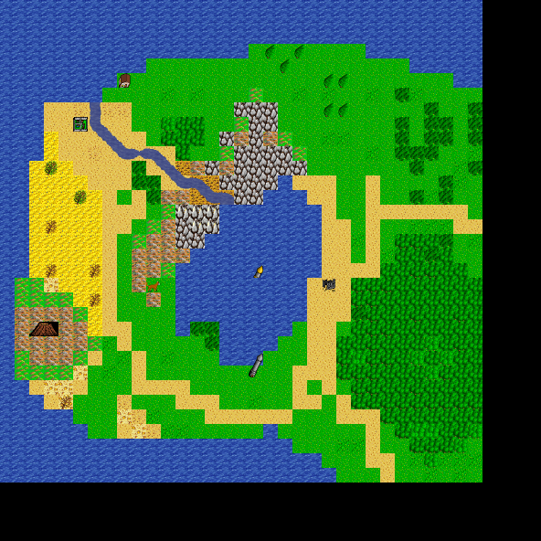

World
Map World, in region Pupland of Times Long Past. Map level: 1.
Map view:

(click for larger view)
Exits from this map:
Exits to this map:
- Guild of Black Shield, Main Floor
- Guild of Dreaming Sage, Main Floor
- Gothwolte's Castle, Level 2
- Guild of Green Goblin, Main Floor
- Volcano, Entrance
- Gothwolte's Castle, Entrance
- To Future
- LoveLove Company
- Guild of Smoking Cauldron, Main Floor
- Guild of Poisoned Dagger, Main Floor
- Guild of Damned Heretics, Main Floor
- Guild of Mailed Fist, Main Floor
- Mountain
- Kurte
- Shining Village
- Mountain
- Lone Village
- Guild of Laughing Skull, Main Floor
- Guild of Zaseki Dzuki Ryoku, Main Floor
- Nurnberg Apartment
- Guild of Drunken Barbarian, Main Floor
- Guild of Purple Butterfly, Main Floor
- Guild of Nenshou Youso, Main Floor
- Guild of Ketsueki Itsuryuu, Main Floor
- Guild of Mockers, Main Floor
- Treasure
- Castle of Eureca, 5th Level
Monsters found on map:
Ancient of Poppy the pup.
Pupland of Times Long Past's map index | Region index | Global map index | World map
{kind=link}